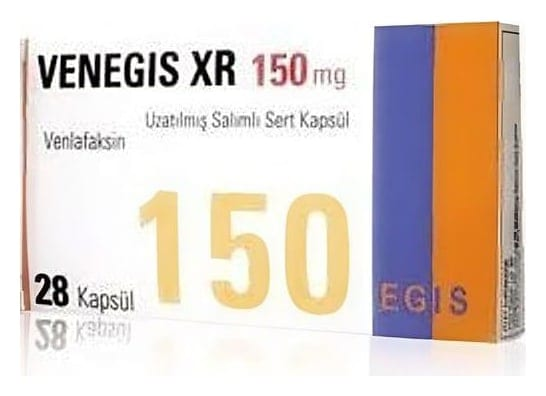

Venegis XR 150 mg Uzatılmış Salınımlı Sert Kapsül, 28 Adet

Ne için kullanılır
KT · Bölüm 1 VENEGİS XR venlafaksin etkin maddesini içerir. Uzatılmış salımlı mikropellet kapsül formundadır. Serotonin ve noradrenalin geri alım inhibitörleri (SNRI’lar) olarak isimlendirilen ilaç grubuna ait bir antidepresandır. CONI SNAP-0EL kendinden kapatmalı sert jelatin kapsül, kırmızı kapak, şeffaf gövde renksiz. Kutuda, koyu sarı-sarı ve beyaz renkte 28 mikropellet kapsül içeren blister ambalajlardadır. Major depresyonun tedavisinde, major depresyonun nüksünün ve yeni episodların (atakların) engellenmesinde, yaygın anksiyete bozukluğu (YAB) tedavisinde, sosyal fobi tedavisinde, agorafobi (hastanın panik atağının ortaya çıkabileceğini hissettiği yerlerde bulunmaktan korkması) ile birlikte veya agorafobi olmaksızın görülen panik bozukluğu tedavisinde kullanılır.